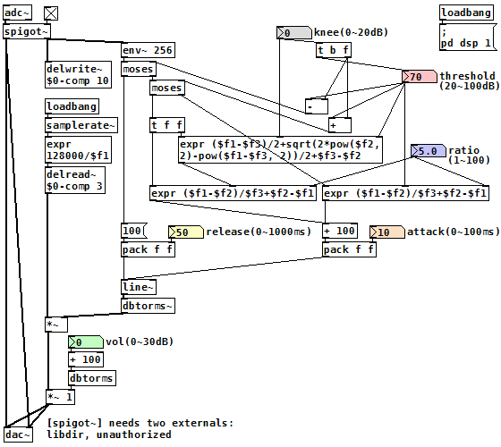
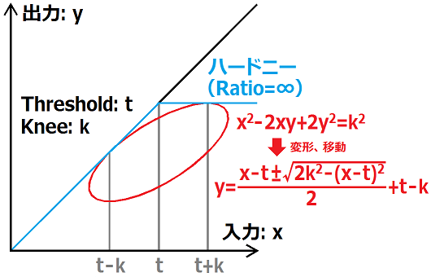

コンプレッサー（Pure Data パッチ）
2017年11月26日 カテゴリー：Pure Data
Pure Data(Pd)では[limiter~]でコンプレッサーを作ることができます（zexyが必要）。自分で作ってもそこまで複雑ではありませんが、今回はニー（knee）というコントロールを追加していますので、やや大掛かりなパッチとなっています。

（このパッチをダウンロード）
[env~ 256]は128サンプルごとに値を出力するため、[delwrite~]で原音をその時間分遅延させてタイミングを合わせています（Windows環境ではなぜかさらに64サンプル程度タイミングがずれました）。[env~]を使ったエフェクト全てに行うべき処理ですが、ディレイタイムがそのままレイテンシーの増加になってしまうため、ノイズゲートやオートワウでは省きました。
[env~ 256]からのエンベロープデータは2つの[moses]で3パターンに振り分けます。threshold+kneeの値以上では通常の圧縮動作となり、threshold-kneeの値未満では圧縮がかかりません。真ん中下側と右側の[expr]の式がコンプレッサーの定義的な式となります。
（例）入力：80dB、threshold：60dB、ratio：10のとき
→（ 80 - 60 ）÷10 + 60 - 80 = -18 （入力音を-18dB変化させる）
threshold±kneeの範囲では、滑らかにthresholdを変化させます。どういった曲線にするかですが、下図のような楕円を考えました。参考ページ→平行四辺形に内接する楕円の三種

k=0のときは急に折れ曲がる形（ハードニー）で、kを上げていく程なだらかなカーブ（ソフトニー）になります。市販のコンプレッサーではどのように処理しているかわからないので、完全に自己流です。
attackとreleaseは音量変化にかける時間（ms）を指定します。[env~]からはデータが次々と出力されてくるので、音量変化の最中にまた次の音量変化に切り替えることになります。このため、実際の変化時間は指定した時間よりも長くかかりますが、動作の仕方としてはそれで問題ないようです。参考ページ→コンプレッサーを考える コンプレッサー アタックタイムの真実 （各種コンプ比較あり）
コンプレッサーの世界は思っていたより奥が深く、入出力の関係がもっと複雑なカーブになっていたり、周波数によって特性が違ったりするものがあるようです。まぁ私には大して違いがわからないでしょうから、あまり深追いしないことにします。